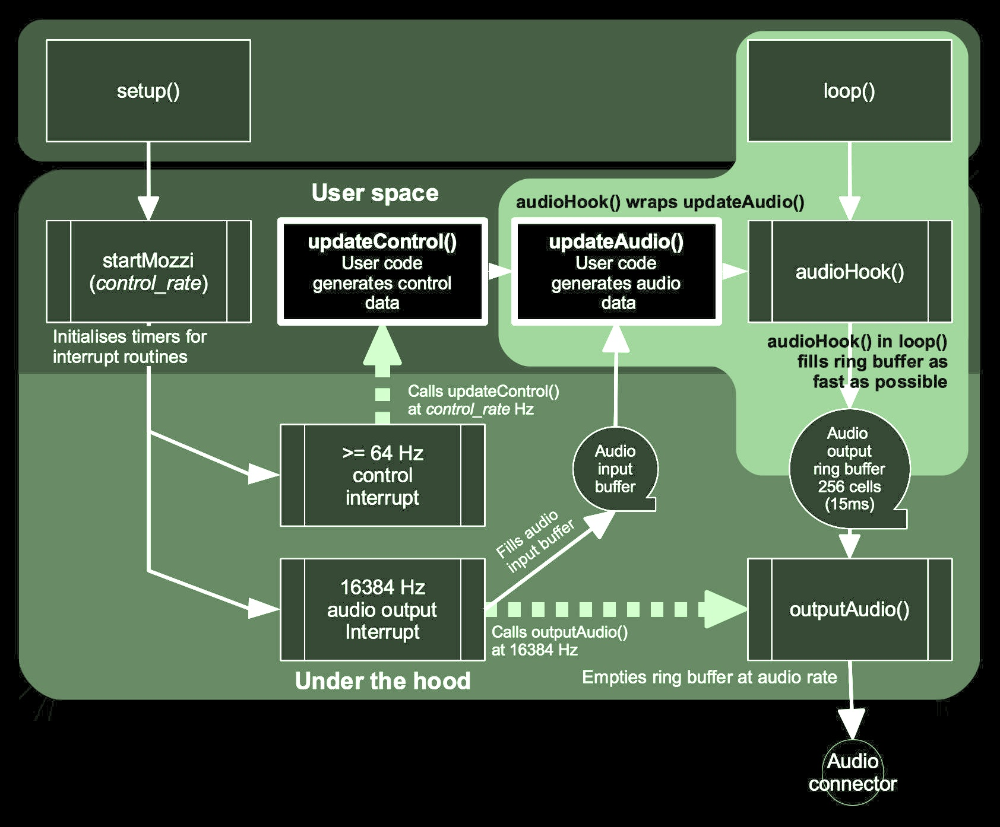

Under the Hood
The interface between Mozzi and the Arduino environment consists of four main
functions. These are startMozzi(), updateAudio(), updateControl() and
audioHook(), visible in the “User space” section in the figure below. All four are
required for a Mozzi sketch to compile.

startMozzi(control_rate) goes in Arduino’s setup(). It starts the control and
audio output timers, given the requested control rate in Hz as a parameter,
or defaulting to 64 Hz without a parameter.
updateControl() is where any analog or digital input sensing code should be placed and
relatively slow changes such as LFO’s or frequency changes can be performed.
updateAudio() is where audio synthesis code should be placed. This runs on
average 16384 times per second, so code here needs to be lean. The only other
strict requirement is that it returns an integer between -244 and 243 inclusive
in STANDARD mode or -8192 to 8191 in HIFI mode.
audioHook() goes in Arduino’s loop(). It wraps updateAudio() and takes care of
filling the output buffer, hiding the details of this from user space.
Mozzi uses hardware interrupts on the processor which automatically call
interrupt service routines (ISR) at regular intervals. startMozzi() sets
up two interrupts, one for audio output at a sample rate of 16384 Hz and a
control interrupt which can be set by the user at 64 Hz or more, in powers of
two.
In STANDARD mode, the internal timers used by Mozzi on the ATmega
processors are the 16 bit Timer 1 for audio and 8 bit Timer 0 for control.
HIFI mode additionally employs Timer 2 with Timer 1 for audio.
Using Timer 0 disables Arduino time functions millis(), micros(), delay()
and delayMicroseconds(). This saves processor time which would be spent on the
interrupts and the blocking action of the delay() functions. Replacements for
these functions are listed on the Mozzi home page under Caveats and Workarounds.
The output buffer has 256 cells which equates to a maximum latency of about 15 milliseconds, to give leeway for control operations without interrupting audio output. The buffer is emptied behind the scenes by the regular 16384 Hz audio interrupt.